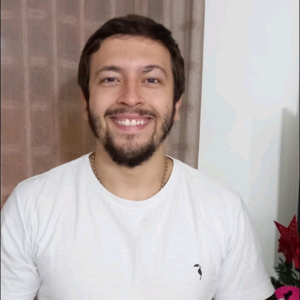

Possuo o grau de tecnólogo em Análise e Desenvolvimento
de Sistemas pelo Centro Universitário da Cidade e de
bacharelado em Sistemas de Informação pela Universidade
Estácio de Sá.
Trabalho na área de desenvolvimento de sistemas desde 2012,
mais focado em Java para aplicações web. Meu conhecimento é mais
focado em Java EE e tecnologias de back-end, mas desde 2019 eu
tenho estudado tecnologias de front-end e devops e trabalhado
como desenvolvedor full stack.
Possuo certificação Oracle Associate, Java SE 7 Programmer, adquirida
em 2015 e AWS Cloud Practitioner, adquirida em 2020.
Atualmente trabalho na ArcTouch como desenvolvedor full stack.
Sobre mim
